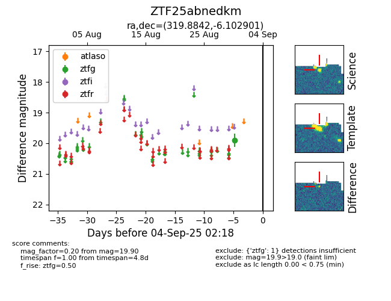

FINK: ZTF25abnedkm
Lasair: ZTF25abnedkm
ALeRCE: ZTF25abnedkm
ZTF25abnedkm (ztf,fink)
equatorial (ra, dec) = (319.8842,-6.10290)
galactic (l, b) = (45.5974,-35.54588)

last ztfg=19.90
1 ztfg detections